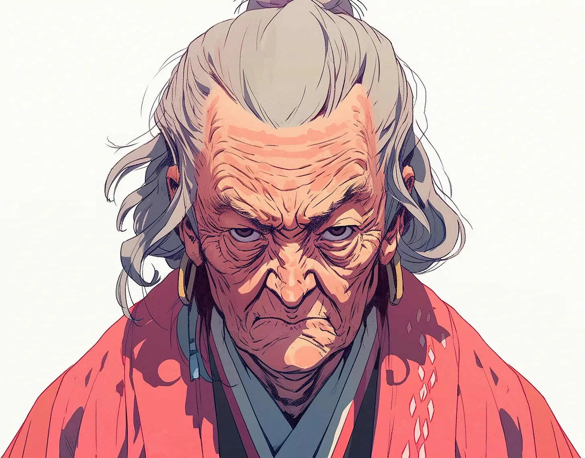

찻잔 하나로 사람을 제압하는 방법이 정확히 열네 가지가 있었지만, 그녀는 맨손을 선호했다. 박 여사는 낡은 문고판 소설의 다음 페이지를 넘기며, 얼그레이 차에서 아침 안개처럼 피어오르는 익숙한 향을 맡았다. 카페의 드러난 벽돌 벽과 닳은 나무 바닥은 이런 조용한 오후를 수없이 목격해왔다. 숨겨진 스피커에서 흘러나오는 재즈는 찻잔이 받침대에 부딪히는 섬세한 소리와 에스프레소 머신의 쉬쉬 소리와 어우러졌다.
[There were exactly fourteen ways to incapacitate a man using just a teacup, but she preferred to use her hands. Mrs. Park turned another page of her worn paperback, the familiar scent of Earl Grey rising from her cup like morning mist. The café’s exposed brick walls and worn wooden floors had witnessed countless quiet afternoons like this one. Jazz whispered from hidden speakers, mixing with the gentle clink of cups against saucers and the hiss of the espresso machine.]
그들이 들어왔을 때 그녀는 모든 것을 관찰하듯 네 명의 남자들을 주시했다. 그들의 부츠가 반들반들한 바닥에 눈 녹은 물자국을 남겼다. 중심이 불안정했다. 발걸음이 무거웠다. 싸움꾼이지 전사가 아니었다. 가장 어린 놈은 재킷 주머니에 제대로 숨기지도 못한 브라스 너클을 끼고 있었다. 가장 덩치 큰 놈은 발목에 칼을 차고 있었다—어디를 봐야 할지 아는 사람만이 볼 수 있는 곳에.
[She noted the four men when they entered, as she noted everything. Their boots tracked slush across the polished floor. Poor center of gravity. Heavy-footed. Street brawlers, not fighters. The youngest wore brass knuckles poorly concealed in his jacket pocket. The largest had a knife strapped to his ankle—visible only to those who knew where to look.]
세 테이블 건너에 젊은 커플이 앉아있었다. 여자는 코트 아래 병원 스크럽을 입고 있었고, 남자의 손에는 건설 현장일을 하면서 생긴 굳은살이 박혀있었다. 그들은 서로를 향해 몸을 기울이며 머핀을 나눠 먹고 있었고, 그들만의 세상에 빠져있었다.
[The young couple sat three tables away. The woman wore hospital scrubs under her coat; the man’s hands bore the calluses of construction work. They leaned toward each other, sharing a muffin, lost in their own world.]
젊은 사랑이여. 서로에게만 집중한 나머지, 주위를 맴도는 늑대들이 보이지 않는구나.
[Young love. So focused on each other, they don’t see the wolves circling.]
불량배들은 아무것도 주문하지 않은 채 카페 안을 돌아다녔다. 다른 손님들은 긴장했고, 대화는 바람 앞의 촛불처럼 사그라들었다. 바리스타의 손은 카운터의 같은 자리만 계속해서 닦으며 떨리고 있었다.
[The thugs ordered nothing, spreading out through the café. Other patrons tensed, conversations dying like candles in wind. The barista’s hands trembled as she wiped the same spot on the counter repeatedly.]
“멋진 시계네,” 가장 어린 불량배가 건설 노동자에게 말했다. 이제 브라스 너클이 보였다. “한 달 월급은 들었겠는데.”
[“Nice watch,” the youngest thug said to the construction worker, brass knuckles now visible. “Bet that cost a month’s wage.”]
협박으로 시작하는군. 일출처럼 뻔해.
[Leading with intimidation. Predictable as sunrise.]
커플이 자리를 뜨려 했다. 가장 큰 남자가 그들의 길을 막았고, 다른 한 명이 여자의 팔을 잡았다. 살이 살을 때리는 날카로운 소리에 박 여사의 시선이 책에서 떨어졌다. 여자의 뺨이 붉어졌고, 그녀의 눈은 충격과 공포로 커져 있었다.
[The couple tried to leave. The largest man blocked their path, while another grabbed the woman’s arm. The sharp crack of flesh meeting flesh snapped Mrs. Park’s attention up from her book. The woman’s cheek reddened, her eyes wide with shock and fear.]
손바닥으로 때리다니. 훈련받지 않은 자들이군. 힘만 있고 집중력은 없어.
[Striking with the palm. Untrained. All force, no focus.]
그녀는 신중하게 책장을 접으며 각도와 거리를 분석했다. 가장 가까운 불량배까지 15피트. 활용할 수 있는 지지 기둥 세 개. 장애물이 될 수 있는 의자 하나.
[She dog-eared her page with deliberate care, analyzing angles and distances. Fifteen feet to the nearest thug. Three support columns to work with. A chair that could become an obstacle.]
“이봐요, 할머니, 신경 끄고—” 가장 가까운 불량배가 일어서는 그녀를 향해 돌아섰다. 마치 수기 신호기처럼 그의 의도가 뻔히 보였다.
[“Hey, grandma, mind your own—” The nearest thug turned toward her rising form, telegraphing his intentions like a semaphore flag.]
경동맥동, 턱 각도에서 2센티미터 아래. 3초간 압박.
[Carotid sinus, two centimeters below the angle of the jaw. Pressure for three seconds.]
그녀의 손가락은 수술적 정확도로 압점을 찾아냈다. 그가 협박을 끝내기도 전에 눈이 뒤로 넘어갔다. 그녀는 쓰러지는 그를 받아내어 조용히 눕혔다. 바닥을 손상시킬 필요는 없으니까.
[Her fingers found the pressure point with surgical precision. His eyes rolled back before he could finish his threat. She caught him as he fell, laying him down quietly. No need to damage the floor.]
“뭐야 씨—” 두 번째 남자가 재킷 안으로 손을 뻗었다. 뒷발에 체중을 실었다. 오른손잡이의 뽑기 자세. 총이 아닌 칼이군.
[“What the fu—” The second man reached into his jacket. Weight shift to back foot. Right-handed draw. Knife, not gun.]
그녀는 그의 방어선 안으로 미끄러져 들어가 상완 신경총 기시부를 팔꿈치로 가격했다. 그가 숨을 헐떡이는 사이 그녀의 무릎이 그의 늑골—특히 아홉 번째와 열 번째—을 찾아냈다. 장작 부러지는 소리같은 균열음이 울렸다.
[She slipped inside his guard, her elbow striking the brachial plexus origin point. As he gasped, her knee found his floating ribs—specifically, the ninth and tenth. The crack echoed like breaking kindling.]
셋과 넷이 측면으로 움직인다. 기본적인 집게 움직임이군.
[Three and four moving to flank. Basic pincer movement.]
세 번째 남자는 빨랐다. 아드레날린이 그에게 속도를 더해주었다. 그의 헤이메이커는 술집 싸움에서는 인상적이었을 것이다. 그녀는 그의 힘을 그 자신의 운동량을 이용해 돌려세워 달려오는 동료에게로 유도했다. 그들은 함께 비틀거렸고, 완벽한 기회를 만들어냈다.
[The third man was quick, adrenaline lending him speed. His haymaker would have impressed in a bar fight. She redirected his force using his own momentum, guiding him into his partner’s rush. They stumbled together, creating a perfect opportunity.]
셋에게는 척골신경 조작. 넷에게는 요골신경 타격.
[Ulnar nerve manipulation on the third. Radial nerve strike for the fourth.]
그녀의 손이 숙련된 효율성으로 움직였다. 손목 잠금이 팔 잠금으로 이어졌고, 팔꿈치를 부러질 듯 과다 신전시켰다. 그들의 비명은 잠시 화음을 이루다가 미주신경을 정확히 가격하자 조용해졌다.
[Her hands moved with practiced efficiency. A wrist lock transitioned into an arm bar, hyperextending the elbow just past its breaking point. Their screams harmonized briefly before she silenced them with precise strikes to the vagus nerve.]
덩치 큰 자가 정신을 차리고 발목의 칼을 뽑았다. 서툰 손잡이 자세. 칼날이 몸의 중심선에서 너무 멀어.
[The large one recovered, pulling his ankle knife. Poor grip. Blade too far from body centerline.]
“할머니, 내가 찔러 죽—”
[“I’ll cut you, you old bi—”]
그녀는 옆으로 비켜서며 그의 무릎 뒤 비골신경을 발로 찾아냈다. 그가 휘청거릴 때 그녀의 팔꿈치가 그의 C5와 C6 척추 접합부를 가격했다. 팔에 전기가 흐를 정도의 압력이었지만, 영구적 손상을 주지는 않을 만큼.
[She sidestepped, her foot finding the peroneal nerve behind his knee. As he buckled, her elbow struck the junction of his C5 and C6 vertebrae. Just enough pressure to send lightning down his arms, not enough to cause permanent damage.]
전체 교전은 43초가 걸렸다. 한 테이블이 살짝 비뚤어진 것 말고는 의자 하나 넘어지지 않았다.
[The entire encounter had taken forty-three seconds. Not a single chair overturned, though one table was slightly askew.]
박 여사는 카디건의 주름을 펴며 확인했다. 젊은 커플이 그녀를 쳐다보았고, 여자는 여전히 붉어진 뺨을 손으로 누르고 있었다.
[Mrs. Park straightened her cardigan, checking for wrinkles. The young couple stared at her, the woman’s hand still pressed to her reddened cheek.]
“얼음을 대세요,” 그녀가 여자의 얼굴을 보며 말했다. “20분 대고 20분 떼고. 그리고 멍에는 아르니카 젤을 바르세요.” 그녀는 자리로 돌아가며 차가 마시기 딱 좋은 온도가 된 것을 만족스럽게 확인했다.
[“Ice,” she told them, nodding at the woman’s face. “Twenty minutes on, twenty off. And arnica gel for the bruising.” She returned to her seat, noting with satisfaction that her tea had reached optimal drinking temperature.]
건설 노동자가 겨우 목소리를 찾았다. “누… 누구시죠?”
[The construction worker found his voice. “Who… who are you?”]
“그저 책 읽기를 즐기는 늙은이일 뿐이에요,” 그녀가 다시 책장을 펼치며 대답했다. “경찰에 신고하는 게 좋겠네요. 이 젊은이들이 불운한 사고를 당한 것 같아서요.” 그녀는 잠시 생각하다가 말을 이었다. “고소는 안 할 거예요. 자존심이 강력한 억제제가 되거든요.”
[“Just an old woman enjoying her book,” she replied, finding her page again. “Though you might want to call the police. These young men seem to have had an unfortunate series of accidents.” She paused, considering. “I doubt they’ll press charges. Pride is a powerful deterrent.”]
카페는 천천히 다시 활기를 되찾았다. 바리스타는 여전히 살짝 떨리는 손으로 새로운 얼그레이 차 주전자를 가져왔다. “서비스예요,” 그녀가 속삭였다.
[The café slowly returned to life around her. The barista brought her a fresh pot of Earl Grey, hands still shaking slightly. “On the house,” she whispered.]
박 여사는 고개를 끄덕이며 감사를 표하고 완벽한 한 잔을 따랐다. 제압된 불량배들의 신음 소리가 독서에 그리 나쁘지 않은 배경음이 되어주었다. 바닥에 누운 늑골이 부러진 남자는 숨을 쉴 때마다 쌕쌕거렸다.
[Mrs. Park nodded her thanks, pouring a perfect cup. The groans of the incapacitated thugs provided a not unpleasant background ambiance to her reading. On the floor, the man with the broken ribs wheezed with each breath.]
다음 주 목요일엔 파인 스트리트의 새로운 카페를 가봐야겠네, 그녀는 차를 한 모금 마시며 생각했다. 스콘이 아주 맛있다고 하더군. 그리고 바라건대, 손님들의 품행이 더 바르길.
[Perhaps next Thursday I’ll try that new café on Pine Street, she mused, taking a sip of her tea. Their scones are supposed to be excellent. And their clientele, one hopes, better behaved.]